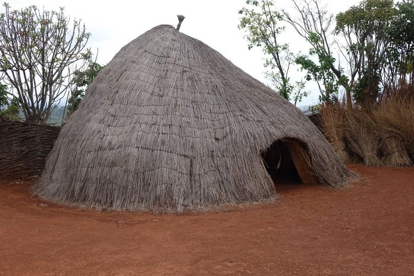
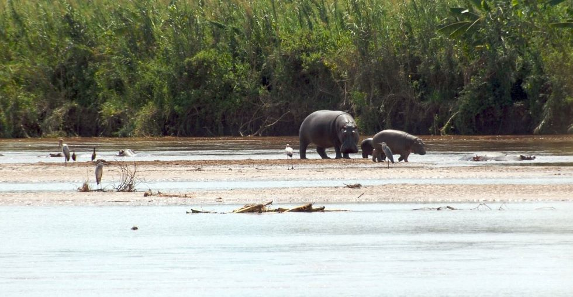

Gishora Drum Sanctuary
Located near Gitega, Gishora offers a profound look into Burundi's royal heritage. Watch live ritual drumming performances that have been recognized globally by UNESCO.

Located near Gitega, Gishora offers a profound look into Burundi's royal heritage. Watch live ritual drumming performances that have been recognized globally by UNESCO.

Just outside Bujumbura, this spectacular park lets you see where the Rusizi River meets Lake Tanganyika. It is home to hippos, unique bird species, and beautiful wetlands.